Liège est une ville située dans l'est de la Belgique, dans la région
wallonne.
C'est la troisième plus grande ville du pays après Bruxelles et
Anvers, et elle est le chef-lieu de la province de Liège.
Liège est une ville historique avec de nombreux bâtiments anciens,
notamment la cathédrale Saint-Paul, le palais des princes-évêques et
le marché couvert de la place du Marché.
Elle est également connue pour sa vie culturelle animée, avec des
festivals de musique, de théâtre et de danse tout au long de l'année.
La ville est traversée par la Meuse, qui offre de belles promenades le
long des quais, et est entourée de collines boisées, ce qui en fait un
lieu de séjour agréable pour les amateurs de nature.
Enfin, Liège est réputée pour sa gastronomie, avec des spécialités
culinaires telles que les gaufres, les boulets à la liégeoise et les
célèbres bières belges.
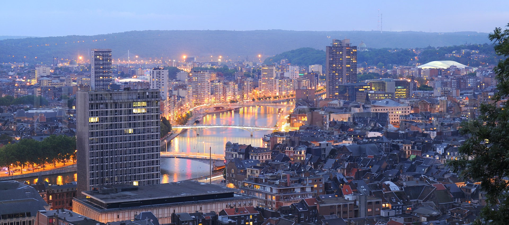
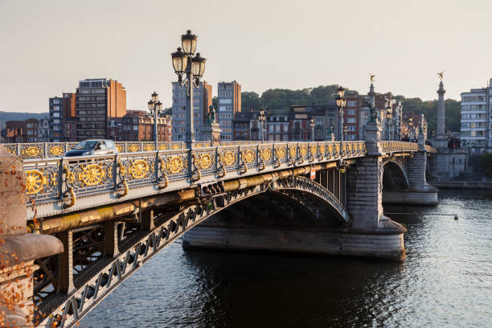
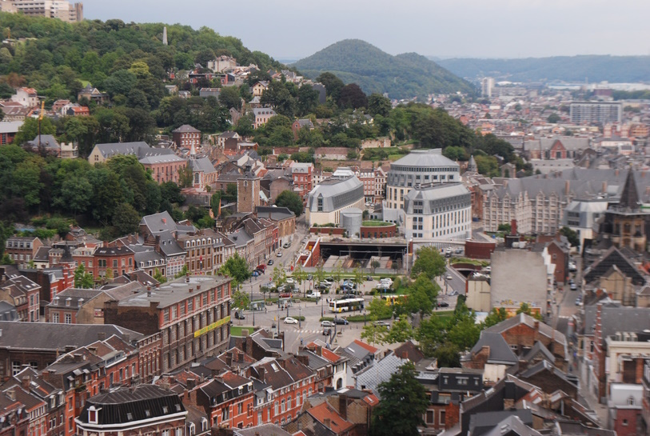
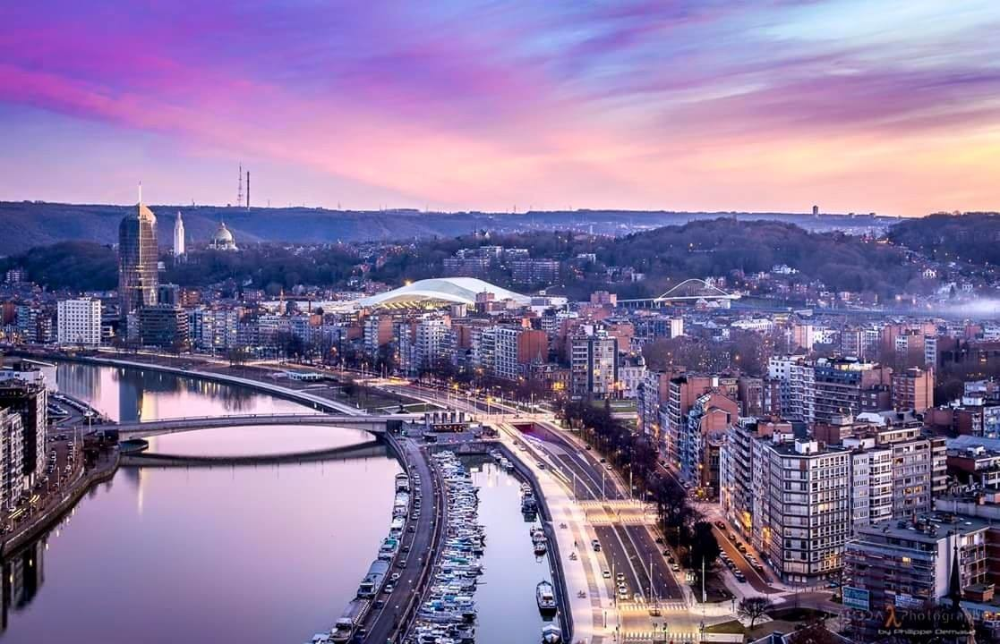
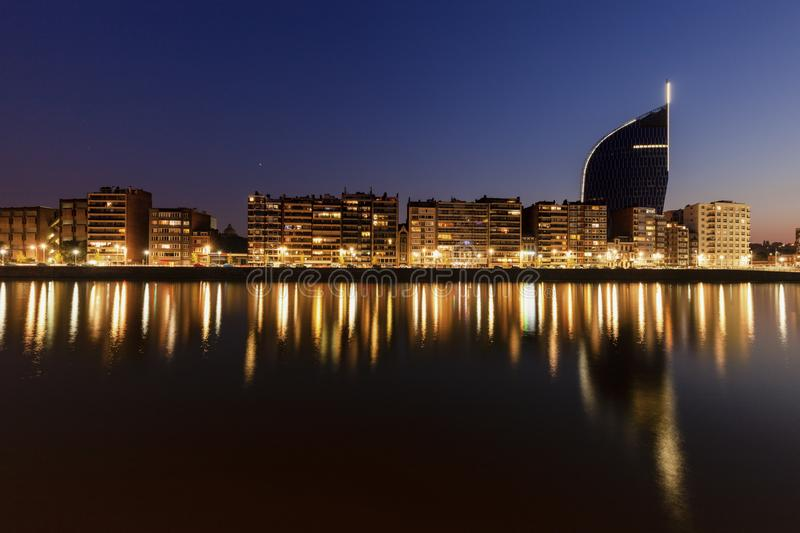
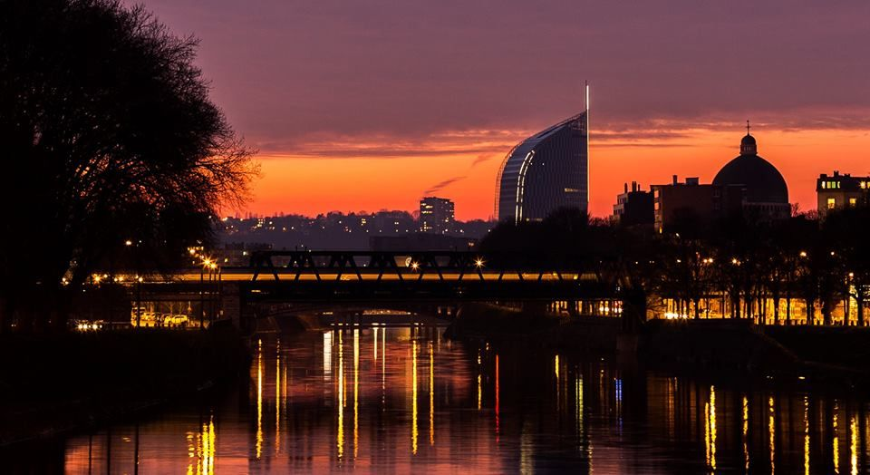
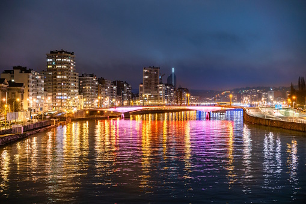
La caféière
La caféière est un magasin de thés et cafés qui a la
particularité de proposer du café torréfié sur place. Situé
rue Puits en sock et dispose d'une petite cour intime (voire
intimiste) et charmante.
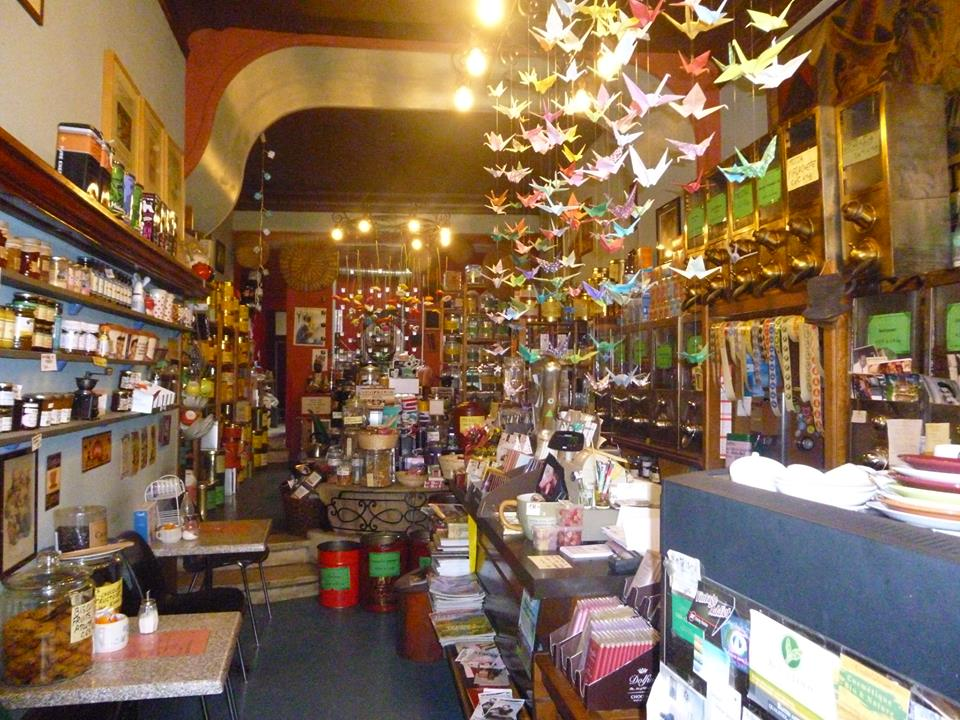
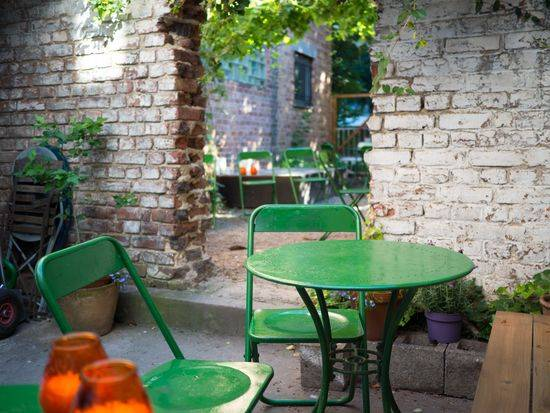
Fragrances
Fragrances est une boutique située dans le quartier
historique de Neuvice, offrant une large sélection de thés
de qualité.
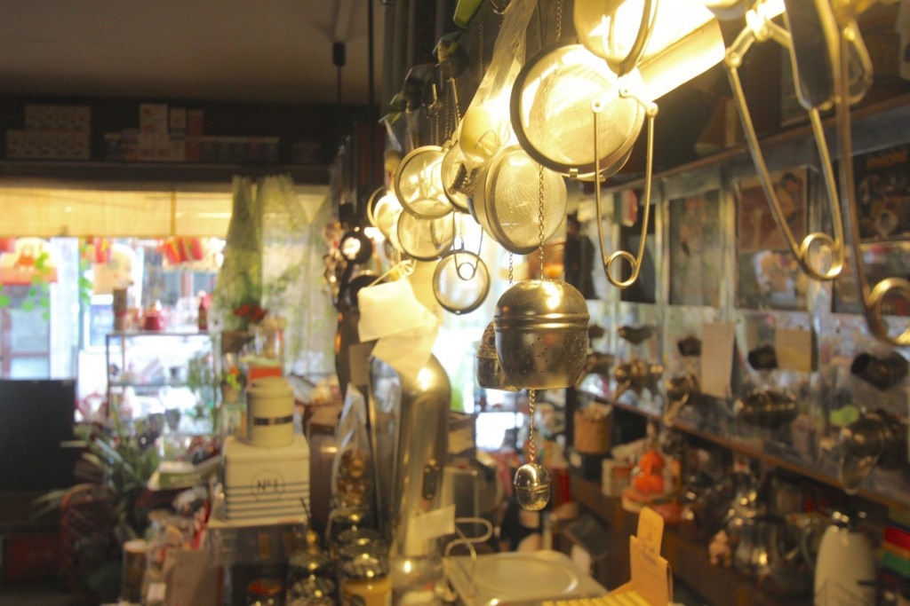
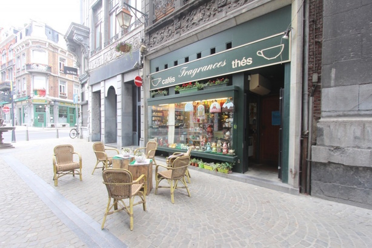
Addict Coffee
Sans chichis, voici un endroit où il est bon de se poser
pour une petite ou plus grande faim, pour y travailler ou
juste y déguster un délicieux café.. Niché dans la rue du
Méry, c’est un petit café où l’on se sent bien dès qu’on
passe le pas de la porte.